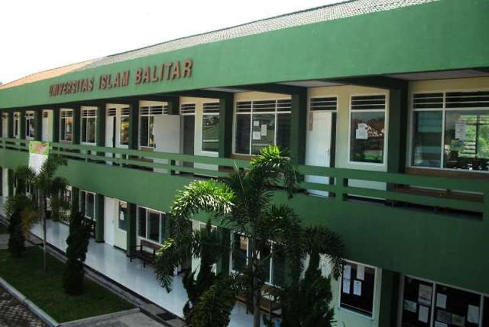

Selamat datang di Universitas Islam Balitar (UNISBA), sebuah universitas terkemuka di Blitar, Jawa Timur. Kami berkomitmen untuk menciptakan lulusan yang memiliki kompetensi unggul dan berintegritas, didukung oleh fasilitas modern dan lingkungan belajar yang kondusif.

Program Studi
Fakultas Teknik
- Teknik Elektro
- Teknik Sipil
Fakultas Teknologi Informasi
- Teknik Informatika (S1)
- Sistem Komputer (S1)
Fakultas Ilmu Sosial dan Ilmu Politik
- Ilmu Administrasi Negara
- Ilmu Administrasi Niaga
- Sosiologi
- Ilmu Komunikasi
Fakultas Keguruan dan Ilmu Pendidikan
- Pendidikan Biologi
- Pendidikan Guru Sekolah Dasar
- Pendidikan Pancasila dan Kewarganegaraan
- Pendidikan Bahasa Inggris
Fakultas Agama Islam
- Perbankan Syariah
- Bimbingan Konseling Islam
- Manajemen Pendidikan Islam
Kelompok 3
- Aby Adilla Khas (23104410008)
- Raya Yuni Setiawan (23104410018)
- Jusafa Ido Adhareza (23104410022)
- M. Diki Fahriza (23104410031)
- Syahrul Evan Nur Rohman (23104410040)